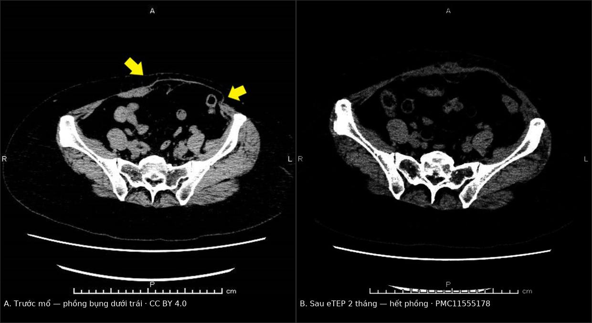
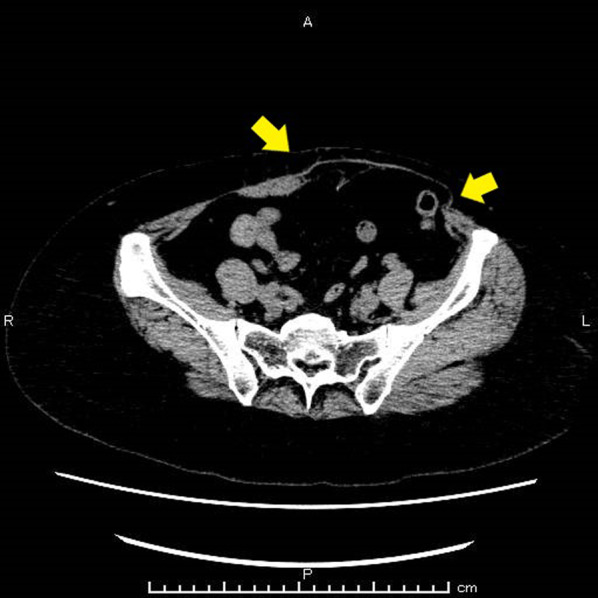
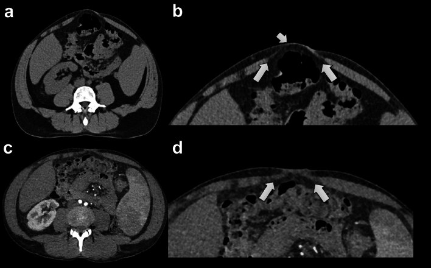

1871 — Phồng – yếu thành bụng sau lấy vạt DIEP/TRAM: bulge do mất thần kinh vs thoát vị thật, CT thì Valsalva và ngưỡng vá lưới
Tags: pattern:phong-thanh-bung pattern:thoat-vi-thanh-bung vung:thanh-bung vung:vu anatomy:co-thang-bung score:Haddock protocol:CT-Valsalva protocol:sieu-am-dong
Mức chắc chắn (certainty): tổng hợp y văn (literature synthesis) — ghép tổng quan hệ thống 6 nghiên cứu về sửa bulge sau DIEP (Gland Surg 2026, PMC13657785), loạt 644 bệnh nhân có phân loại Haddock (J Plast Reconstr Aesthet Surg 2021, PMID 33487570), phân tích CT cơ thẳng bụng trước–sau lấy vạt (Diagnostics 2022, PMC8947670), ca eTEP sửa bulge 9,5 cm (Surg Case Rep 2024, PMC11555178), nghiên cứu CT Valsalva 95 bệnh nhân/205 thoát vị (Hernia 2024, PMC11449955), case–control về khâu gấp mạc (J Clin Med 2025, PMC12653567) và 2 phân tích gộp (Man 2009, PMID 19342994; Parmeshwar 2023, PMID 37697962). Không có ca do nhóm tự chụp.
Câu hỏi thực hành: nữ 53 tuổi, 3 năm sau tái tạo vú bằng vạt DIEP trái, đến khám vì bụng dưới trái phồng lệch, không đau nhiều, không có khối sa khi ho. Khám: vùng chậu trái nhô ra khi gồng bụng, không sờ thấy bờ lỗ khuyết; chụp CT bụng vì lý do khác thấy cơ thẳng bụng trái mỏng, mạc còn liên tục. Câu hỏi: đây là thoát vị, giãn cơ hay "bulge do mất thần kinh" — chụp thêm gì để phân biệt, và có cần mổ không? Bài chốt ba quyết định: (1) bulge = mạc liên tục + cơ mỏng/teo, không có túi — không phải thoát vị; (2) CT bụng–chậu có thì Valsalva là chuẩn để đo lỗ khuyết, đo khoảng cách hai cơ thẳng (IRD) và xác nhận mạc liền; (3) mạc liền thì vá lưới đơn thuần ít giá trị — điều trị theo kiểu hình Haddock: yếu/bulge nhỏ → theo dõi + vật lý trị liệu 6 tháng; bulge lớn/thoát vị/giãn cơ có triệu chứng → gia cố toàn vùng yếu (retrorectal/eTEP ± TAR), không chỉ vá ổ khuyết. Nối 1689 – Nhiễm trùng và hoại tử vạt tự thân sau tái tạo vú, 1687 – Hoại tử mỡ sau tái tạo vú, 516 – Hình ảnh vú sau điều trị.
1. Tổng quan bệnh học – cơ chế hình ảnh: vì sao DIEP vẫn để lại "phồng" dù không cắt cơ
- Tần suất – con số quyết định mức nghi ngờ: bulge/thoát vị sau DIEP được báo cáo 1,6–33% tuỳ định nghĩa (PMC11555178), nhưng trong các loạt có mẫu số rõ ràng thì 3,6–4,8%: 23/644 (3,6%) (PMID 33487570), 8/168 (4,8%) phải mổ lại (PMID 17632336), 5/123 (4,1%) bulge không có khuyết mạc (PMID 15655459); loạt vạt tự do hỗn hợp 9/62 (14,5%) nhưng không tách được DIEP (PMC13657785). Vạt TRAM có cuống rõ ràng tệ hơn: thoát vị thành bụng 16,0% vs 1,0% ở DIEP trong 190 bệnh nhân (p < 0,001, PMID 16651940), và phân tích gộp cho nguy cơ bulge/thoát vị giảm một nửa với DIEP so với free TRAM (RR 0,49; KTC 95% 0,28–0,86) (PMID 19342994).
- Vì sao DIEP vẫn "yếu" dù giữ cơ: vạt DIEP giữ cơ thẳng và bao trước, nên khuyết mạc thật là chuyện hiếm; cái bị cắt là nhánh vận động của thần kinh liên sườn T10–T12, chạy giữa cơ chéo trong và cơ ngang bụng rồi xuyên bao trước cơ thẳng ở phía ngoài hàng lỗ xuyên (lateral row). Bóc tách hàng xuyên bên ngoài hoặc lấy bỏ bao cơ để lấy vạt sẽ cắt/đốt các nhánh này (PMC8947670). Hậu quả là teo và thoái hoá xơ–mỡ một phần thân cơ, không phải rách mạc.
- TẠI SAO cơ mỏng lại "phồng" dù áp lực ổ bụng không đổi: thành bụng hành xử như thành bình chịu áp — lực căng tỉ lệ với áp lực × bán kính (Laplace), còn độ cứng chống uốn tỉ lệ với luỹ thừa 3 của bề dày. Giảm nửa bề dày cơ làm độ cứng còn khoảng 1/8, nên chỉ cần áp lực ổ bụng như cũ (gồng bụng, đứng lâu, ho) là vùng đó đẩy ra trước — đó chính là bulge. Vì không có lỗ khuyết nên không có túi phúc mạc, và không có nội tạng chui ra.
- Vì sao CT thấy được nguyên nhân: cơ thẳng bình thường dày và đậm (khoảng 40–60 HU), còn vùng thoái hoá xơ–mỡ giảm đậm độ về phía mỡ (−50 đến −100 HU) và hẹp bề ngang. Trong nghiên cứu CT trước–sau ở 12 bệnh nhân, bề ngang và bề dày cơ thẳng được đo ở hai mặt phẳng ngang cách rốn 8 cm về trên và 8 cm về dưới; nhiều bệnh nhân giảm bề dày bên cho vạt, một số tăng bù bên đối diện; 1 bệnh nhân phải mổ lại vì bulge bụng dưới (PMC8947670). Chỉ 2 bệnh nhân giãn cơ > 30 mm — ngưỡng nhóm nghiên cứu dùng để gọi là giãn đáng kể, không phải ngưỡng đã được thẩm định.
- Vì sao vá lưới KHÔNG sửa được bulge: phân tích gộp 2.791 bệnh nhân DIEP/11 nghiên cứu (890 có lưới, 1.901 khâu mạc nguyên phát) cho thấy lưới giảm rõ thoát vị đơn thuần (OR 0,28; p = 0,03 — giảm 72%) nhưng không giảm bulge (OR 0,62; p = 0,43) và không giảm biến cố gộp bulge + thoát vị (OR 0,69; p = 0,20) (PMID 37697962). Lý do: lưới vá được lỗ khuyết, nhưng không hoàn nguyên được cơ đã mất thần kinh — đúng như cơ chế ở trên.
- Khâu gấp mạc (plication) có ích khi có giãn cơ: trong 62 bệnh nhân (25 gấp mạc, 37 chứng), bulge gặp 16,2% ở nhóm chứng và 0% ở nhóm gấp mạc (p = 0,095 — chưa đủ lực thống kê), điểm BREAST-Q "sức khoẻ thể chất – bụng" cao hơn ở nhóm gấp mạc (PMC12653567). Đây là bằng chứng yếu, không ngẫu nhiên hoá.
- Yếu tố nguy cơ đã định lượng: có nhiễm trùng vết mổ và hy sinh thần kinh tương quan với bulge/thoát vị (p < 0,05); hàng xuyên bên ngoài, giữ rốn, BMI cao, lưới sinh học chỉ xu hướng, không có ý nghĩa (PMID 33487570). Ở 198 bệnh nhân đã có mổ bụng trước đó, 10 (5,1%) cần mổ vì bulge/thoát vị; nhóm bị biến chứng có tỷ lệ dùng lưới vĩnh viễn 40,0% vs 13,3% (p = 0,029) — confounding do chỉ định, không phải lưới gây biến chứng (PMC10775310).
- Thời điểm xuất hiện – quan trọng cho lịch theo dõi: khoảng cách từ tái tạo đến lúc mổ sửa rất rộng, 3 đến 66 tháng; loạt robot trung bình 27,8 tháng (7–66); ca eTEP được mổ sau 3 năm (PMC13657785, PMC11555178). Vì vậy "mổ 6 tháng trước thấy bình thường" không loại trừ bulge.
2. Mẫu hình + chẩn đoán phân biệt theo kiểu hình và vị trí (Gamut)
- Kiểu hình (phenotype) — cách chia có ích cho điều trị (Haddock 2021, PMID 33487570):
- Type 1 — yếu thành bụng (weakness): chỉ có cảm giác yếu/chùng, không có biến dạng nhìn thấy, không có lỗ khuyết. Trong 644 bệnh nhân, 7% người trả lời BREAST-Q báo yếu bụng, cao hơn ở nhóm cắt rốn (p < 0,05).
- Type 2 — bulge nhỏ, một bên: nhô ra khi gồng, mạc liền, thường do teo cơ sau mất thần kinh, hay ở bụng dưới cùng bên cho vạt.
- Type 3 — thoát vị thật hoặc bulge lớn hai bên: có lỗ khuyết hoặc biến dạng lan rộng hai bên đường giữa.
- Gamut theo vị trí:
- Bụng dưới cùng bên cho vạt: bulge do teo cơ/đứt nhánh thần kinh — hay gặp nhất sau DIEP.
- Đường giữa trên/dưới rốn: giãn cơ thẳng (diastasis recti) — có thể có từ trước, bị lộ ra sau khi thành bụng yếu đi.
- Quanh rốn: thoát vị rốn, thoát vị tại vết mổ cũ (Pfannenstiel, mổ lấy vạt) — nhóm mổ bụng hở có nguy cơ cao hơn.
- Hông/dưới sườn: thoát vị Spigelian, hoặc giả thoát vị do zoster (liệt cơ theo khoanh da) — không có lỗ khuyết.
- Mnemonic 4 chữ "BULG": Bulge do thần kinh (mạc liền), Umbilical/incisional hernia (có lỗ), Laxity–diastasis (giãn đường giữa), Gathering of fluid (seroma/tụ máu) — mỗi chữ một hướng xử trí khác nhau.
3. Bảng so sánh phân biệt (ma trận đối chiếu)
| Thực thể (entity) | Hình ảnh điển hình | Chốt vào (rule-in) | Chốt loại (rule-out) | Gợi ý xác nhận |
|---|---|---|---|---|
| Bulge do mất thần kinh / teo cơ | CT: cơ thẳng mỏng, giảm đậm độ, mạc trước liên tục, không túi; phồng rõ khi Valsalva; siêu âm: mạc liền + cơ mỏng | Mạc liên tục trên mọi mặt phẳng + cơ mỏng so bên đối diện + tiền sử lấy vạt cùng bên | Có lỗ khuyết mạc hoặc túi chứa mỡ/ruột → không phải bulge đơn thuần | CT có Valsalva + siêu âm động; đo bề dày cơ cách rốn 8 cm |
| Thoát vị thật (ventral/incisional) | Lỗ khuyết mạc rõ, túi chứa mỡ hoặc quai ruột, cổ túi hẹp; kích thước tăng khi Valsalva | Thấy lỗ khuyết + nội dung thoát ra, đau/tắc khi ho | Mạc liền, chỉ cơ mỏng → bulge | CT Valsalva đo đường kính lỗ (mm); so sánh 2 thì |
| Giãn cơ thẳng (diastasis recti) | Hai bờ cơ tách xa ở đường giữa, IRD tăng, không có lỗ khuyết riêng lẻ; hay kèm thoát vị rốn | IRD đo được, rộng hơn khi gồng; bờ cơ đều hai bên | Tổn thương lệch một bên ngoài đường giữa → nghĩ bulge/thoát vị | Đo IRD tại rốn và 3 cm trên rốn |
| Seroma / tụ máu dưới da | Khối dịch giữa da–cân và mạc, đậm độ dịch, không có nội dung ruột; không đổi theo Valsalva | Đậm độ dịch + không thông với ổ phúc mạc, thường vài tuần sau mổ | Có quai ruột/mỡ trong túi, Bormann rõ → thoát vị | Siêu âm; CT không cản quang; chọc hút chỉ khi nghi nhiễm |
| Giả thoát vị do zoster (pseudohernia) | Phồng một bên theo khoanh da, cơ thành bụng mỏng/liệt, mạc liền, không tiền sử mổ vùng đó | Ban zoster cùng khoanh da + liệt cơ khu trú | Không có ban, có lỗ khuyết → thoát vị thật | Khám da; CT xác nhận mạc liền |

Trái: CT ngang trước mổ — thành bụng dưới trái mỏng, phồng ra, mạc liên tục, không có túi (mũi tên vàng của tác giả). Phải: sau eTEP + giải phóng cơ ngang bụng + lưới 20 × 20 cm, 2 tháng — đường viền thành bụng trở lại. Nguồn: Surg Case Rep 2024, PMC11555178, CC BY 4.0. Ảnh ghép letterbox, không crop.Ba dấu hiệu quyết định trên CT
- 1. Mạc trước có liền không? Rà mặt phẳng ngang, dọc và coronal — một lỗ khuyết nhỏ có thể chỉ thấy trên một mặt phẳng. Mạc liền trên cả ba = không phải thoát vị.
- 2. Cơ thẳng dày bao nhiêu so với bên đối diện? Đo bề dày và bề ngang ở cùng mức; chênh lệch rõ cùng bên cho vạt = teo sau mất thần kinh. Đây là dấu nguyên nhân, không phải dấu của thoát vị.
- 3. Có "thay đổi theo áp lực" không? Cho bệnh nhân gồng bụng (Valsalva) rồi chụp lại: bulge và thoát vị đều tăng, nhưng thoát vị chỉ tăng khi có lỗ khuyết, còn bulge tăng do cơ mỏng đàn hồi kém. Ở 95 bệnh nhân/205 thoát vị, 14–17% thoát vị chỉ thấy được khi Valsalva (PMC11449955) — bỏ thì Valsalva là bỏ sót.
4. Protocol chụp + phân loại và ngưỡng xử trí
- CT bụng–chậu (không cần cản quang đường uống): lát 1–2 mm, bệnh nhân nằm ngửa, tay đưa lên; chụp 2 thì: nghỉ và Valsalva tối đa. Cần che phủ toàn thành bụng từ mỏm ức tới khớp mu — không cắt bớt "vì chỉ hỏi chuyện vú".
- Đo gì – ghi gì (bộ tối thiểu): đường kính lỗ khuyết (mm), kích thước túi (mm), nội dung túi (mỡ/ruột/bàng quang), IRD tại rốn và 3 cm trên rốn, bề dày – bề ngang cơ thẳng ở 8 cm trên và 8 cm dưới rốn, vị trí lưới cũ nếu có. Đây là bộ biến số mà tổng quan 2026 đề nghị để so sánh được giữa các lần chụp (PMC13657785).
- Giá trị của thì Valsalva – số liệu cụ thể (PMC11449955, 95 bệnh nhân, 205 thoát vị): kích thước túi trung vị 31 mm khi Valsalva vs 24 mm khi nghỉ (p < 0,001); 73–82% thoát vị rõ hơn khi Valsalva; 14–17% chỉ thấy khi Valsalva; IRD tại rốn 23 vs 20 mm (chênh 13%) và ở người giãn cơ thực sự 48 vs 39 mm (chênh 19%); phồng đường trắng 18% vs 10%.
- Siêu âm động là bạn đồng hành: bulge = mạc liền + cơ mỏng; thoát vị = mạc đứt + túi (PMC12653567). Siêu âm rẻ, làm được khi gồng bụng, nhưng không thay CT khi cần đo lỗ khuyết để chọn lưới hay khi béo phì.
- Phân loại Haddock + đường điều trị (PMID 33487570; tổng quan 2026 bổ sung 6 kiểu hình mô tả, PMC13657785):
flowchart TD
A[Phong hoac yeu thanh bung sau vat DIEP/TRAM] --> B[Kham + sieu am dong + CT co Valsalva]
B --> C{Mac truoc con lien?}
C -->|Co| D{IRD rong bat thuong?}
C -->|Khong| E[Thoat vi that - Type 3]
D -->|Khong| F[Bulge do mat than kin - Type 2]
D -->|Co| G[Diastasis recti]
F --> H{Type 1 yeu don thuan hoac bulge nho?}
H -->|Co| I[Theo doi + vat ly tri lieu 6 thang]
H -->|Khong| J[Gia co toan vung yeu: retrorectal hoac eTEP + TAR + luoi]
E --> J
G --> K[Gap mac hoac tai tao retrorectal + luoi]
- Ngưỡng và bằng chứng xử trí — nói rõ mức chắc chắn:
- Type 1 và bulge nhỏ một bên không có lỗ khuyết: theo dõi + vật lý trị liệu cơ lõi 6 tháng rồi đánh giá lại; không có dữ liệu so sánh cho thấy mổ sớm tốt hơn (PMC13657785 — ý kiến chuyên gia, bằng chứng rất thấp).
- Giãn cơ: ngưỡng IRD > 30 mm chỉ là tiêu chí của một loạt, chưa thẩm định ở bệnh nhân sau DIEP (PMC8947670, PMC13657785).
- Thoát vị thật: mổ theo nguyên tắc thoát vị — đóng mạc khi làm được + lưới; lưới giảm thoát vị OR 0,28 nhưng không giảm bulge (PMID 37697962).
- Bulge lớn/hai bên/tái phát: gia cố toàn vùng yếu, không chỉ ổ nhô. Ca eTEP: lưới polypropylene 20 × 20 cm đặt retrorectal, cố định vào dây chằng Cooper, sau giải phóng cơ ngang bụng một bên; không tái phát sau 2 tháng (PMC11555178). Loạt robot 10 bệnh nhân: 7/10 không tái phát, 2/10 tái phát dưới vùng lưới, 1/10 thoát vị trên vùng vá, theo dõi trung bình 16,9 tháng (PMC13657785).
- Tái phát sau sửa do TRAM: 20,9%, lưới có vẻ bảo vệ so với chỉ khâu (Pinell-White 2014, dẫn qua PMC13657785) — dữ liệu TRAM, không chuyển thẳng sang DIEP.
- Không có thử nghiệm ngẫu nhiên nào; toàn bộ bằng chứng sửa bulge là hồi cứu, cỡ mẫu nhỏ, GRADE rất thấp — mọi so sánh kỹ thuật chỉ mang tính giả thuyết.
5. Biến thể bình thường và cạm bẫy
- Đường viền không đối xứng sau mổ là bình thường: vạt lấy một bên, rốn có thể bị kéo lệch, mô mỡ hai bên khác nhau — đừng gọi mọi chỗ lõm/nhô là bulge. Chỉ gọi bulge khi có triệu chứng hoặc biến dạng rõ khi gồng bụng.
- Chụp ở thì nghỉ: bỏ mất 14–17% thoát vị chỉ thấy khi Valsalva (PMC11449955). Nếu bệnh nhân gồng không đủ (đau, không hiểu lệnh), ghi rõ trong kết luận là "Valsalva chưa đạt" thay vì kết luận "không có thoát vị".
- Nhầm seroma với thoát vị: khối dịch sau mổ có đậm độ dịch, không có quai ruột, không to hơn khi gồng. Chọc hút chỉ khi nghi nhiễm — chọc vào túi thoát vị là tai biến.
- Nhầm bulge với thoát vị → mổ sai: nói "thoát vị" khiến bệnh nhân và phẫu thuật viên chấp nhận vá ổ khuyết nhỏ, trong khi vấn đề là cả vùng cơ đã mất thần kinh — đây là lý do phổ biến của tái phát dưới/ngoài vùng lưới (2/10 ca robot, PMC13657785).
- Cạm bẫy "thoả mãn tìm kiếm": CT ở bệnh nhân ung thư vú thường được đọc chỉ để tìm di căn/tái phát; thành bụng là vùng dễ bị bỏ qua — luôn rà thành bụng trên mọi CT bụng–chậu của bệnh nhân đã tái tạo bằng vạt bụng.
- Giả thoát vị do zoster: phồng một bên theo khoanh da, mạc liền, khởi phát sau đợt đau rát/ban — không mổ, điều trị zoster và theo dõi phục hồi.
- Giữ rốn hay cắt rốn: nhóm cắt rốn báo yếu bụng nhiều hơn (p < 0,05, PMID 33487570) — hỏi kỹ thuật mổ cũ trước khi quy kết "do vạt".
6. Tự lượng giá — Blind Quiz
Ca 1 — Nữ 53 tuổi, 3 năm sau DIEP trái, bụng dưới trái phồng. Nhìn CT ngang, mô tả trước khi đọc đáp án.

- Câu hỏi: Thành bụng dày hay mỏng? Có lỗ khuyết mạc không? Có nội tạng chui ra không? Chẩn đoán và bước tiếp theo?
Bấm để hiện đáp án
- Findings: thành bụng dưới bên trái mỏng rõ so với bên phải, da–mỡ đẩy ra trước (mũi tên vàng); mạc trước liên tục, không có túi, không có quai ruột ngoài ổ phúc mạc.
- Chẩn đoán: bulge do teo cơ thẳng sau mất thần kinh — không phải thoát vị. Bề ngang vùng phồng 9,5 cm trên CT.
- Bước tiếp theo: đo bề dày cơ so bên đối diện + IRD, chụp thêm thì Valsalva nếu chưa có; điều trị theo kiểu hình (theo dõi/vật lý trị liệu nếu nhẹ, gia cố vùng yếu nếu có triệu chứng).
- Nguồn: Surg Case Rep 2024, PMC11555178, CC BY 4.0 (mũi tên của tác giả, giữ nguyên).
Ca 2 — Cùng bệnh nhân sau mổ: so sánh hai thì CT.
- Câu hỏi: Sau mổ thay đổi gì? Vì sao dùng lưới 20 × 20 cm thay vì vá đúng chỗ phồng?
Bấm để hiện đáp án
- Findings: sau eTEP + giải phóng cơ ngang bụng (TAR) + lưới polypropylene 20 × 20 cm đặt retrorectal, đường viền thành bụng cân đối lại, không còn chỗ phồng; không tái phát sau 2 tháng.
- Vì sao lưới rộng: vấn đề là cả vùng cơ mất thần kinh, không phải một lỗ khuyết — gia cố toàn vùng yếu mới chịu được lực; vá đúng ổ nhô dễ tái phát dưới/ngoài vùng lưới (2/10 ca loạt robot).
- Nguồn: Surg Case Rep 2024, PMC11555178, CC BY 4.0. Ảnh ghép letterbox, không crop.
Ca 3 — Nam 40 tuổi, bụng trên lồi khi gồng, không tiền sử mổ. Hai lần chụp CT cách nhau 2 tháng.

- Câu hỏi: Ảnh nào có Valsalva? Dấu hiệu chính là gì? Đo gì để theo dõi?
Bấm để hiện đáp án
- Findings: hàng trên (a, b) là CT có Valsalva: đường trắng giãn rộng, phồng ra trước (mũi tên); hàng dưới (c, d) là CT không Valsalva chụp 2 tháng trước: không thấy phồng, khoảng cách hai cơ nhỏ hơn.
- Số đo: IRD 64 mm khi Valsalva; ở nghiên cứu 95 bệnh nhân, IRD tại rốn 23 vs 20 mm, ở người giãn cơ thực sự 48 vs 39 mm; phồng đường trắng 18% vs 10%.
- Chẩn đoán: diastasis recti — không phải thoát vị (mạc liền, không túi). Theo dõi bằng IRD tại rốn và 3 cm trên rốn, cùng điều kiện gồng.
- Nguồn: Hernia 2024, PMC11449955, CC BY 4.0 (mũi tên và nhãn của tác giả, giữ nguyên).
Bài liên quan chéo
- 1689 – Nhiễm trùng và hoại tử vạt tự thân sau tái tạo vú
- 1687 – Hoại tử mỡ sau tái tạo vú bằng vạt ghép mỡ
- 516 – Hình ảnh vú sau điều trị
- 165 – Dày thành ruột (phân biệt thành bụng – thành ruột trên CT)
Ảnh
- Năm ảnh, tất cả CC BY 4.0, tải từ Europe PMC; nguồn và giấy phép từng file ở
images/CREDITS.md; ảnh ghép tạo bằngtools/make_composite.py(letterbox, không crop, không kéo giãn).
Không dùng để chẩn đoán độc lập khi chưa có người hướng dẫn.